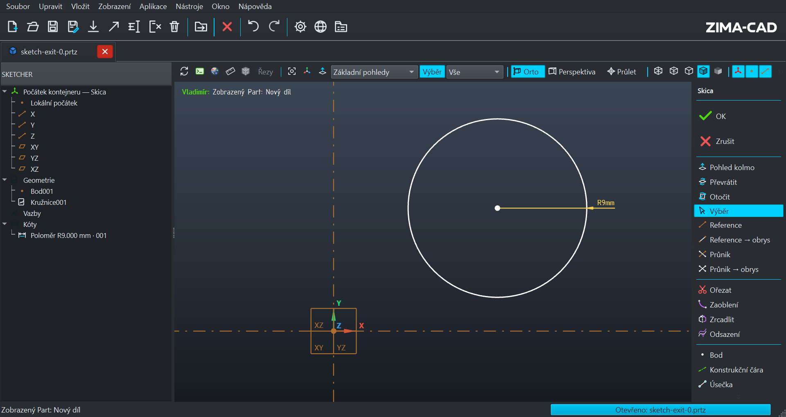
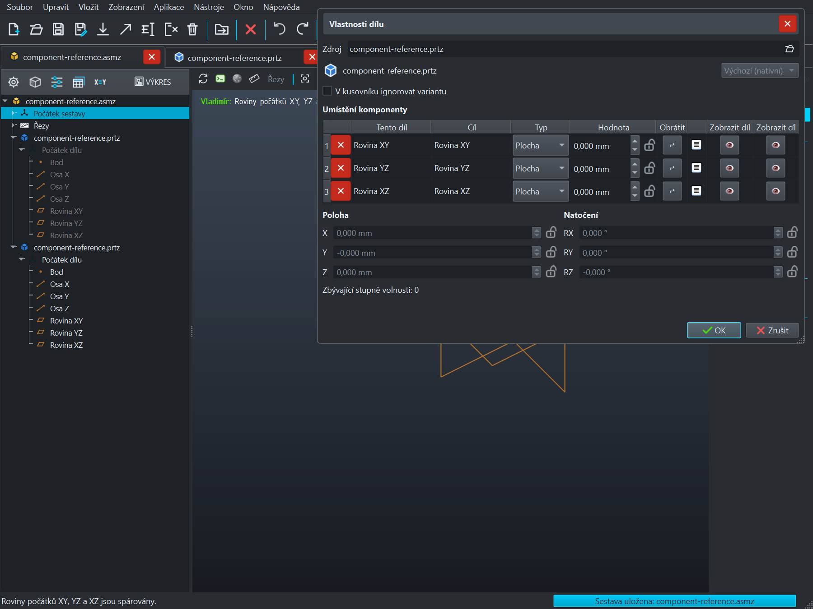
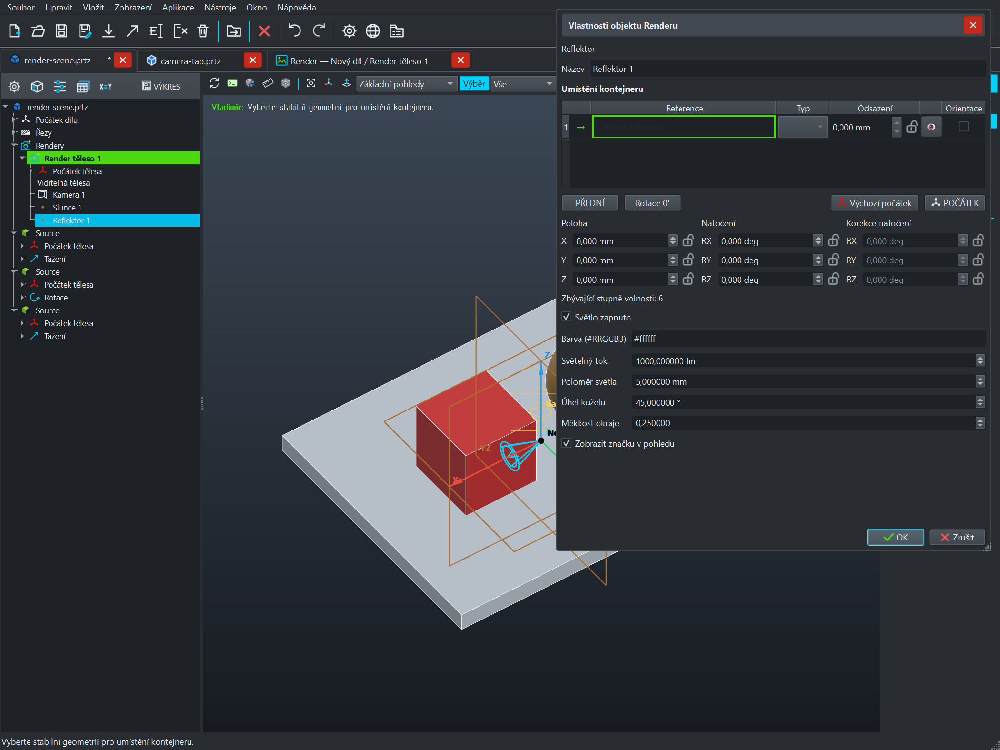

ZIMA-CAD / Guides
Trouvez votre prochaine étape.
Des guides illustrés pour chaque outil. Les mêmes guides sur le Web et dans ZIMA-CAD.
Le texte du guide est en anglais.
 Premiers pasOuvrir le guide
Premiers pasOuvrir le guide
EsquisseOuvrir le guide Extrusion et révolutionOuvrir le guide
Extrusion et révolutionOuvrir le guide Congé et chanfreinOuvrir le guide
Congé et chanfreinOuvrir le guide BalayageOuvrir le guide
BalayageOuvrir le guide TôlerieOuvrir le guide
TôlerieOuvrir le guide
AssemblagesOuvrir le guide PlansOuvrir le guide
PlansOuvrir le guide Éléments finisOuvrir le guide
Éléments finisOuvrir le guide
RenduOuvrir le guide FAOOuvrir le guide
FAOOuvrir le guideAucun guide ne correspond à la recherche.